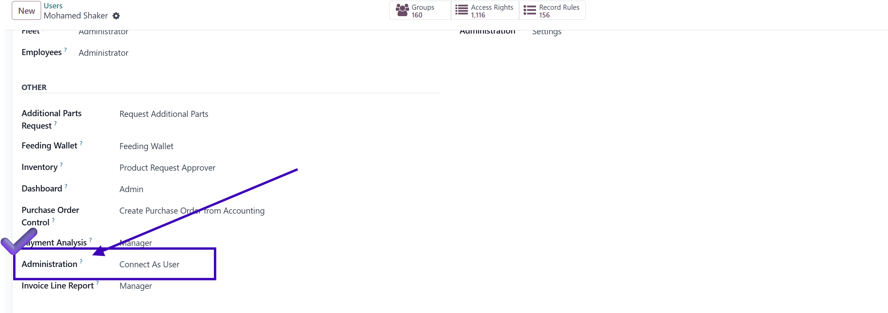
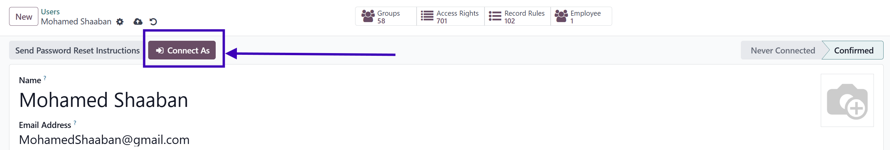
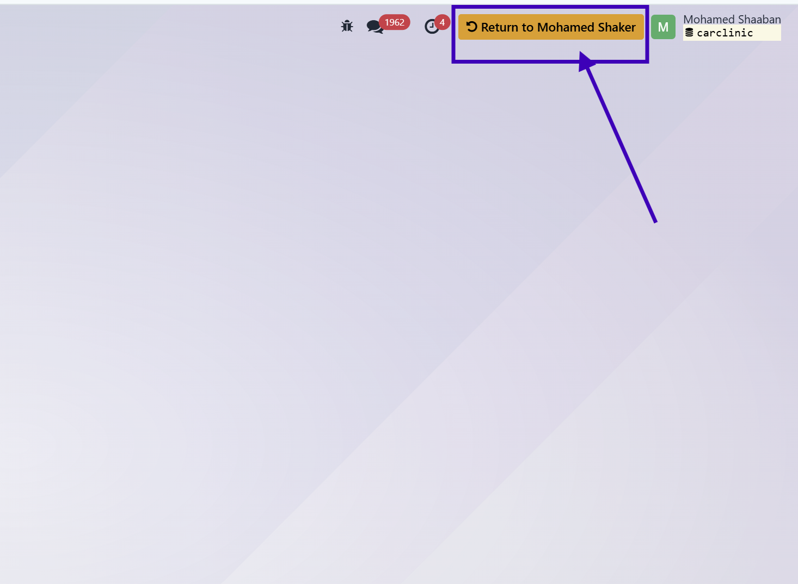

Connect As User
Seamlessly authenticate into any user session with a single click. The ultimate administrative tool for Odoo, designed for security and speed.
Core Capabilities
Instant Session Switching
Access any target user's profile and click the "Connect As" button to immediately hijack their session environment for debugging or support.
Passwordless Authentication
Bypass the need to request or reset user passwords. Administrators retain total oversight without compromising individual user credentials.
Strict Access Control
Functionality is strictly governed by a dedicated "Connect As User" security group, ensuring only authorized super-users have access.
Audit & Traceability
Maintains system integrity by logging session transitions. System logs ensure you can track who connected as whom and when.
Application Screenshots
A glimpse into the simple and seamless integration.



Frequently Asked Questions
Need Help or Customization?
We provide professional Odoo development services and dedicated technical support to ensure our apps fit your business perfectly.
me@mohamedshaker.com